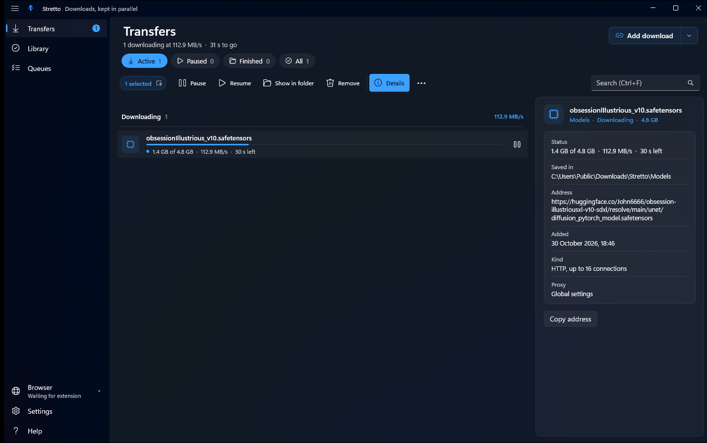
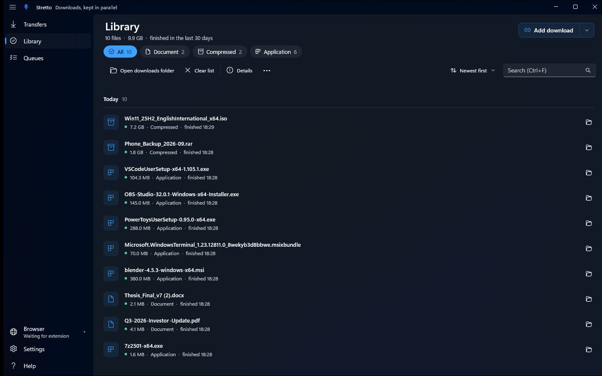
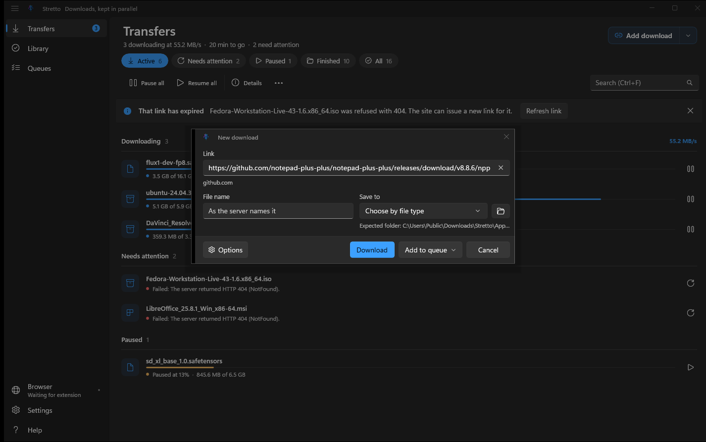
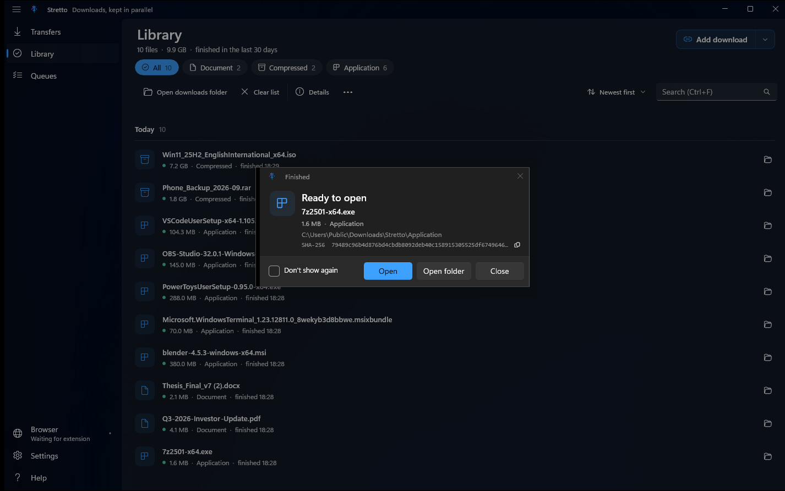

Find the useful speed.
HTTP connections ramp up while throughput improves. Host budgets, retry delays and backoff help keep the server in the conversation.
HTTP / HTTPS · FTP · resumeWINDOWS DOWNLOAD MANAGER
A generous free downloader for the files that take a little longer. Adaptive connections, reliable resume, and a proper home for everything you save.

Adaptive connectionsPush when it helps. Back off when it doesn't.
Pick up where you left offResume supported transfers after interruptions.
A browser companionBring accepted downloads into Stretto.
BUILT FOR THE ACTUAL DOWNLOADING
You shouldn't need a small collection of utilities just to keep your downloads in order. The useful bits belong together.
HTTP connections ramp up while throughput improves. Host budgets, retry delays and backoff help keep the server in the conversation.
HTTP / HTTPS · FTP · resumeArrange named queues, schedule their runs and set a global speed limit. The rest of your connection would also like a turn.
Queues · schedules · speed controlsEditable categories and folders, file-type filters and search. Check a file's checksum, then open it or jump straight to its folder.
Categories · search · checksumsONE APP. A LITTLE COMPANY.
Optional Chromium and Firefox companions hand over accepted downloads, collect page links and report detected media. Setup lives in the app, where it belongs.
Browser support & setup ↗Some form submissions and browser-bound sessions need to stay in the browser. Stretto leaves room for that.
LESS ABSTRACT. MORE ACTUAL APP.
Current development / Store-candidate screenshots. The public alpha may look a little different. Example files are shown; transfer speeds vary.



LET'S GET SOMETHING DOWNLOADED
The GitHub alpha is available now. Read the installation notes before trying it; this preview uses a self-signed testing certificate.
Version 0.1.0-alpha.1 · Windows x64
Windows 10 1809 or later
EXE and MSIX options. Required runtimes are included. Test signing does not establish a trusted publisher; review the certificate instructions before installing.
The original free code is Apache-2.0, including personal and commercial use. Read it, build it, make it your own. Keep the applicable notices intact.
Stretto on GitHub ↗Microsoft StoreVersion 0.1.1 was submitted for certification on October 30, 2026. A Store download link will be added when published.
That's the point. Adaptive downloads, resume, queues, schedules, categories, checksums and browser integration are in the free app. Paid extras are a future plan; this version has no paid feature activation or subscription.
The preview packages include the required .NET and Windows App SDK runtimes. Ordinary file downloads need no optional tools. ffmpeg and yt-dlp are separate, optional components for supported media extraction and conversion.
The companion supports Chromium browsers and Firefox. Current Chromium setup uses an unpacked extension. Regular Firefox can load the unsigned companion temporarily, but it disappears on restart. Permanent Firefox distribution requires Mozilla signing. The in-app Browser setup explains the options.
Supported media depends on the source and optional tools. DRM, access permissions and browser-bound sessions still apply. Stretto does not bypass them.
Start with the support page. Include your app version, Windows version and what happened. Remove private URLs, cookies and credentials from anything you share. Bug reports are welcome; nobody needs to apologize for finding one.
MADE BY MAREK CODEX · PLEXUS APPS
Built for people who just want a good tool. Donations are welcome, never a prerequisite.